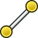

|
| Topic |
|---|
| Черчение |
| Level |
| Начинающий |
| Time to complete |
| 20 минут |
| Author |
| Drei |
| FreeCAD version |
| 0.16 или выше |
| Example File(s) |
Contents |
Введение
Данный урок знакомит пользователя с основами рабочего процесса Верстака Draft, включая создание профилей, использование рабочих поверхностей, создание размеров, текста и надписей. В уроке используется нотация (X, Y, Z) для указания координат точки объекта.
Требования
- FreeCAD версии 0.16 или выше
- Пользователь ознакомлен со вкладками Данные и Вид для изменения свойств элементов при необходимости.
Действие
Удостоверьтесь, что инструмент Привязки Draft включён для использования в этом уроке.
- Start FreeCAD
- If you haven't opened a new FreeCAD document (most of the FreeCAD window looks greyed-out), from the pull-down menu click File > New or click the Create A New Document tool
 .
. - Activate the Draft Workbench
- Select the Edit menu
- Click on Preferences
- Go to Draft and select the Grid and snapping tab
- Verify that the Show Draft Snap toolbar is active
Заметьте, вы можете изменить видимость Сетки в меню, если вы хотите отключить её.
Using Planes
Planes are used to restrict the behaviour of the Draft tools to a specific plane, avoiding problems with the location of points and curves in complex workpieces. Planes can reference the axes of the coordinate system (XY, YZ, ...) or they can use a planar surface in the document as its reference.
- Select Set working plane. It ca be located within the Draft workbench toolbar or inside the Draft menu in the Utilities division.
- Selec the XY plane
Creating Profiles
The creation of profiles can be done in several ways. Though it is possible to use simple arcs and lines to do most of the work, FreeCAD includes several tools to speed up the process.
Линии и дуги
- Выберите инструмент Дуга.
- Установите координаты центра в (0, 0, 0)
- Задайте радиус 30 мм
- Задайте начальный угол 60.0°
- Задайте апертуру 60.0°
Повторите действия для второй дуги, но с радиусом 25 мм.
Закройте профиль парой линий.
- Выберите инструмент  Линия.
- Наведите курсор на конечную точку любой из дуг. При приближении к конечной точке должна появиться белая точка и значок . Выберите конечную точку.
- Выберите конечную точку другой дуги.
- Повторите для другой стороны дуг.
Теперь профиль определён несколькими кривыми, но он ещё не распознаётся как одно целое. Возможно продолжить работу с отдельными элементами как они есть, но в данном случае мы объединим их в один объект.
The following actions will alter the way the objects behave, making it hard to edit their properties, so it is best to do any necessary modifications before proceding.
- Выберите одновременно дугу и линию удерживая клавишу CTRL
- Щелкните
 Объединить
Объединить

{kind=link}
{kind=link}
{kind=link}
{kind=link}
{kind=link}
Оба объекта будут соединены в Ломаную. Повторите действие для соединения всех четырёх элементов в одну Ломаную.
Planes, Rectangles and Circles
- Click Rectangle
- Set the first point on (-100, -60, 0)
- Set the second point on (140, 90, 0)
{kind=link}
The result is a Plane. Its properties can be modified to remove the filling, by changing its Display Mode to Wireframe.
{kind=link}
Полигоны
- Выберите Полигон
- Укажите центральную точку в (0, 0, 0)
- Задайте радиус 50 мм
- Задайте количество сторон 6
{kind=link}
Arrays
Arrays are used to replicate an object several times in a direction, a revolution axis or along a path.
- Select the Wire that was previously created
- Click
 Array
Array - In the Data tab of the object, change the Array type from ortho to polar
- Change Number Polar from 1 to 3
Adding Dimensions
Dimensions require a constant use of Snapping Constraints to properly select the points that one wishes to dimension. The Snapping toolbar is used to change the possible points that can be selected.
- Select Dimension
- Select the first point. This can be either an existing element or specified by coordintes. For this tutorial, the first point will always be (0, 0, 0)
- Select the second point. Approach the midpoint of the top line of the polygon. A white point should appear alongside this icon
- Move the cursor to the desired location of the dimension and click on it.
- Change the font size on the View tab to 6 mm
{kind=link}
{kind=link}
Повторите действия для дуг и отверстий.
Annotations and Text
There is a slight difference between the two: it is only possible to use the second one as a profile to perform 3D operations.
Annotations
- Select Text
- Select the reference point in the 3D View. In this case, the midoint of the top arc.
- Enter your text and press Enter. Repeat for as many lines of text as you wish to input.
- Press Enter
{kind=link}
Text
- Select
 ShapeString
ShapeString - Select the reference point in the 3D View. This can be an existing point or the current cursor location.
- Enter your text and press Enter
- Set the desired font size
- Leave tracking at 0 mm
- Select the path to the font file that you wish to use
Creating Blueprints
To create blueprints, it is necessary to create a Drawing with the elements that you wish to use. Please read the Drawing tutorial for a detailed description.
Вы закончили обучение основам Модуля Draft.
Рекомендуемая информация
- Для детального описания верстака см. Модуль Draft
- Подробнее об управлении Привязками см. Привязки Draft